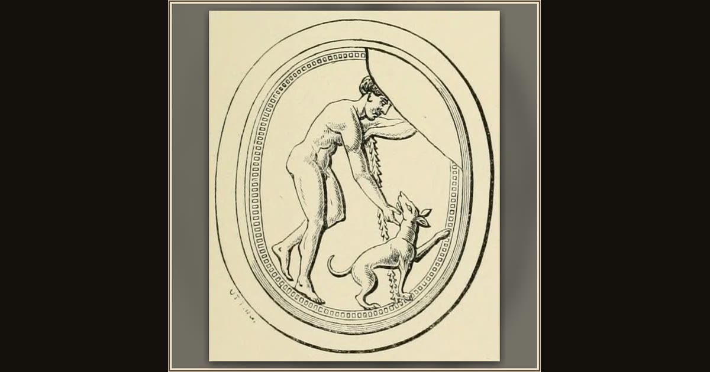

Ulysses and Argos
Robert Brooke Utting · 1885 · Wikimedia Commons
This little oval gem (signed 'Utting' at the lower left) frames a healthy hound springing up on its hind legs to paw its master - a hopeful reunion that quietly rewrites Homer, whose real Argos lies neglected on a dung-heap with no strength to move nearer (Od.